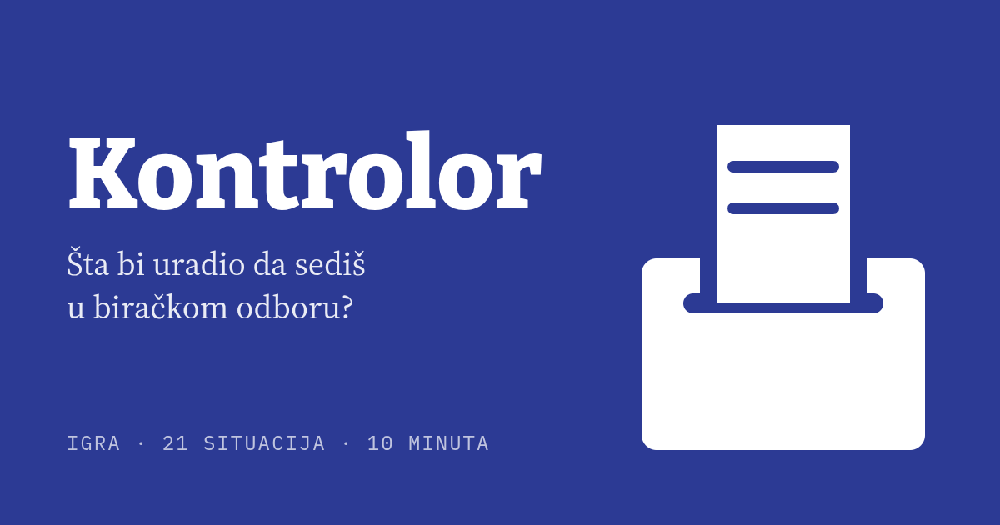
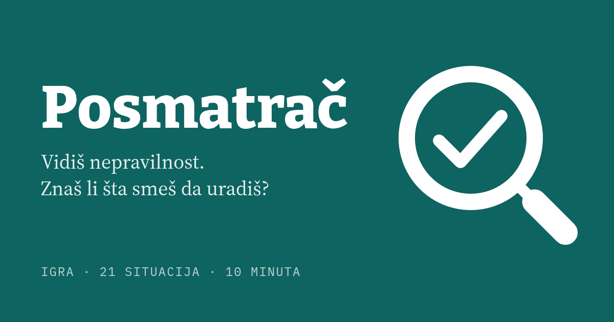
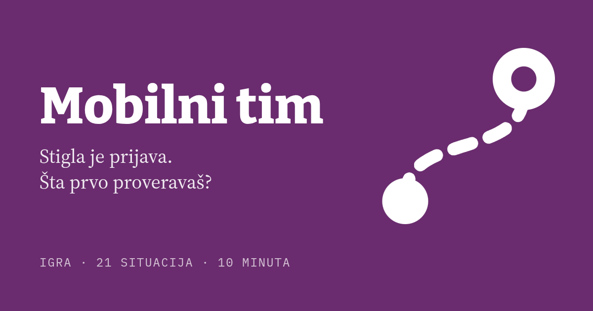
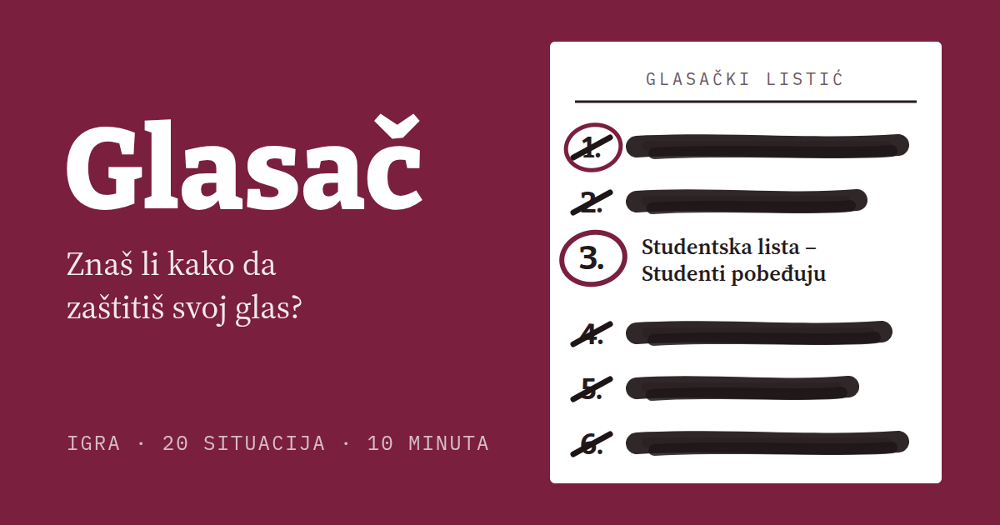

-

Uloga: član biračkog odboraKontrolor
Član si biračkog odbora na dan izbora. Kroz 21 situaciju, od primopredaje materijala do zapisnika, odluči šta je ispravno i saznaj zašto.
21 situacija · oko 10 minutaIgraj → -

Uloga: posmatračPosmatrač
Akreditovani si posmatrač na biračkom mestu. Kroz 21 situaciju, od pripreme do izveštaja, odluči kada i kako da postupiš.
21 situacija · oko 10 minutaIgraj → -

Uloga: mobilni tim posmatračaMobilni tim
Sa kolegom obilaziš devet biračkih mesta. Kroz 21 situaciju, od plana obilaska do izveštaja, odluči šta da proveriš, zabeležiš i javiš.
21 situacija · oko 10 minutaIgraj → -

Uloga: glasačGlasač
Tvoj glas pripada samo tebi. Kroz 20 situacija odluči kako da ga sačuvaš od pritiska, ucene i prevare.
20 situacija · oko 10 minutaIgraj →